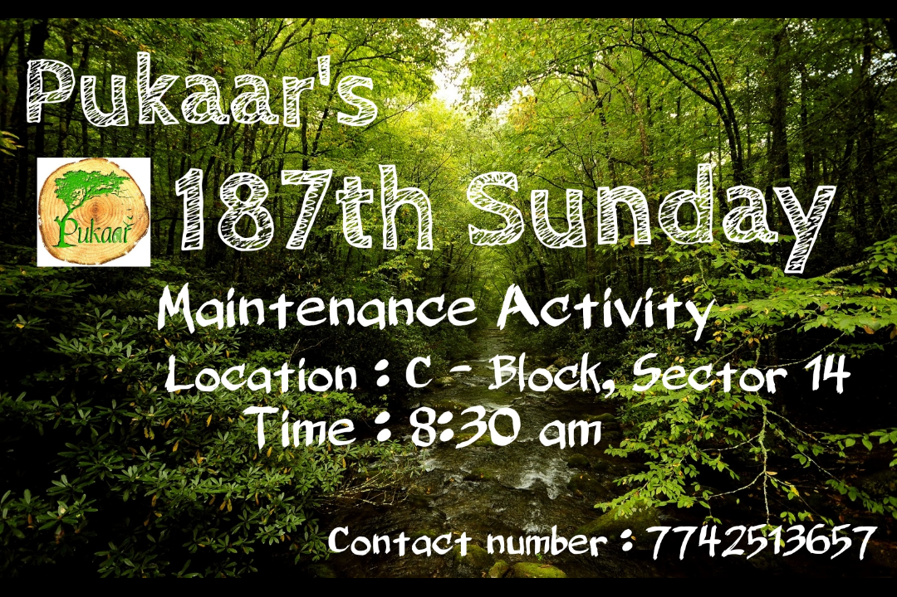
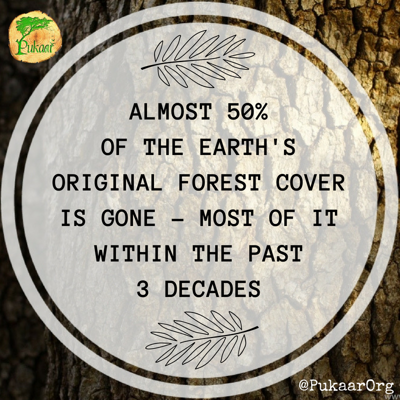

Design
Well, someone might ask “Hey, you’re a BBA from Commerce background, so how did you got into design ?”
My Answer is simple, because of need
Yes, Need of good graphics
It was maybe the month of October’17 when Pukaar needed a poster for next event, so i just tried making one,
and this is the mess i made, the first one ( It does’t have date [facepalm] )
I 
Then Canva even didn’t last more than 6 months,
T 
You might have seen the minimal changes that make a lot of difference.
But Canva was a problem, it was not an all-in-one app solution, even here i used the white background from Snapseed.
I searched for Graphic Design tools for Linux, and my first land was Krita, not bad at all but it was more oriented to the one with experience but then i tried inkscape and got fixed with it.
Inkscape now is love,
with inkscape i finished my first Graphic Design internship